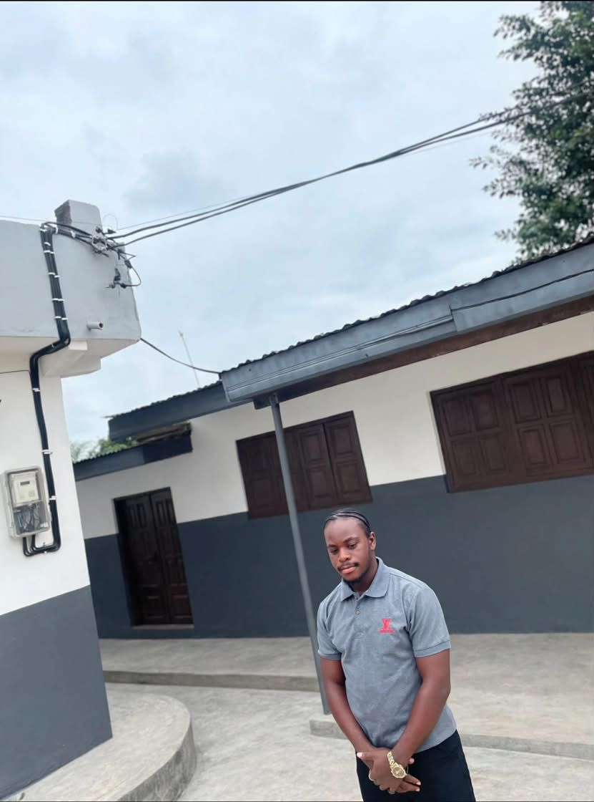
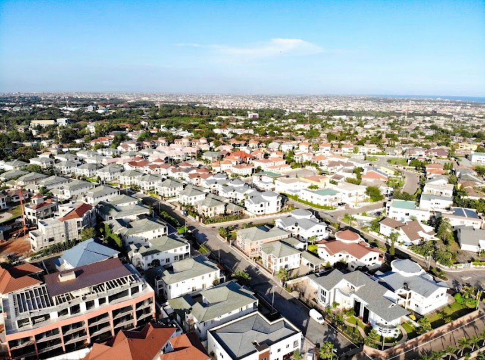

William Ofosu Ntim
About Me
Hello! My name is William Ofosu Ntim and I am from Accra, Ghana. I enjoy studying and reading my bible. I am currently studying at BYU-Idaho and hoping to have a successful academic year. I love watching football and I support Bayern. I one day wanna live in Germany. I am currently not working and a devoted student. I'm working hard to grow my skills in HTML, CSS and Javascript. I'm a good listener and enjoy helping others feel heard. I'm adaptable and can stay calm under pressure. I'm passionate about personal growth and self-improvement. I'm committed to making a positive impact wherever I go. I'm self-motivated and love setting big goals for myself. I'm approachable and people feel comfortable opening up to me. Accra Ghana Temple

About Place
Accra is the capital of Ghana and is located on the Atlantic coast of West Africa. It is the largest city in Ghana and serves as the country's political, economic, and cultural center. Accra is known for its vibrant markets, historical landmarks, and diverse cultural scene. The city has a rich history, with influences from various colonial powers, including the British and Dutch. Accra is also home to several universities, museums, and art galleries, making it a hub for education and creativity in the region. The city experiences a tropical climate with distinct wet and dry seasons, attracting tourists from around the world.

Learn more: Accra on Wikipedia | Ghana Government Portal